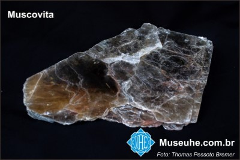

Micas

Síntese das principais características, ocorrências e origem da muscovita.
De acordo com Benbow et al. (2012) a palavra “mica” é derivada do latim “micare”, que significa “brilho”. Essa denominação se dá pelo fato de que as micas correspondem a um grupo de silicatos que pertencem à classe dos minerais em forma de folhas (filossilicatos) e que apresentam várias propriedades físico-químicas em comum, dentre elas uma clivagem basal perfeita, a superfície lisa e principalmente a aparência brilhante desses minerais. Além disso, caracteriza-se com coloração branca-prateada translúcida à totalmente transparente, podendo apresentar outras cores devido possíveis impurezas em sua composição química, e dureza de 2,5 e 4, paralelo às placas e perpendicular a elas respectivamente, na escala de Mohs.
O grupo das micas é composto por diversos tipos de minerais, sendo os mais comuns a muscovita, a biotita e a flogopita, além de algumas espécies mais raras, tais como lepidolita e zinnwaldita , sendo essas micas ricas em lítio e flúor, paragonita e glauconita, sendo estas pertencentes a subdivisão das micas sódicas , e por fim as micas ricas em cálcio tal como margarita e xantofilita. Contudo, no âmbito de indústrias de cosméticos, a muscovita apresenta-se como a mica de maior importância em sua aplicação para esse fim. Abaixo, têm-se uma figura com a Síntese das principais características mineralógicas, ocorrências e origem da muscovita, bem como exemplos de regiões mundiais, brasileiras e de Minas Gerais que detém depósitos importantes desse bem mineral. As principais aplicações como mineral farmacêutico ou cosmético também estão assinaladas.
A ocorrência da muscovita se dá em rochas ígneas, metamórficas e sedimentares, em concentrações muito variáveis, sendo formada por processos pneumatolíticos, hidrotermais e metamórficos (metamorfismo regional e de contato em condições de temperaturas baixas e altas). Somado a isso, forma-se também na cristalização magmática de rochas ácidas (silicosas), de granulação grossa, especialmente em fase final, denominadas pegmatitos, onde a exploração industrial é feita com maior frequência, uma vez que os fluidos geradores dessas rochas apresentam espaço para crescer livremente, permitindo a ocorrência de grandes cristais. Apesar de ser explorada nos pegmatitos, sua formação tem ocorrência principalmente em rochas aluminosas metamorfizadas, tal como xistos, gnaisses, filitos, etc. Por ser mais resistente que o feldspato ao intemperismo, pode ser encontrada com o quartzo em muitos sedimentos nas praias, nos fundos e margens de rios e lagos.
Os principais depósitos brasileiros que pode-se extrair muscovita para fins da indústria de cosméticos estão localizados na Província Pegmatítica Oriental, e segundo Correia Neves (1997), os pegmatitos ricos em muscovita ocorrem em grande número na Província Oriental e são agrupados em distritos locais, dois deles no estado da Bahia (São João do Paraíso e Vitória da Conquista-Itambé) e oito em Minas Gerais, e também pode-se destacar a Província Pegmatítica do Seridó, presente em territórios do Rio Grande do Norte e Paraíba.
